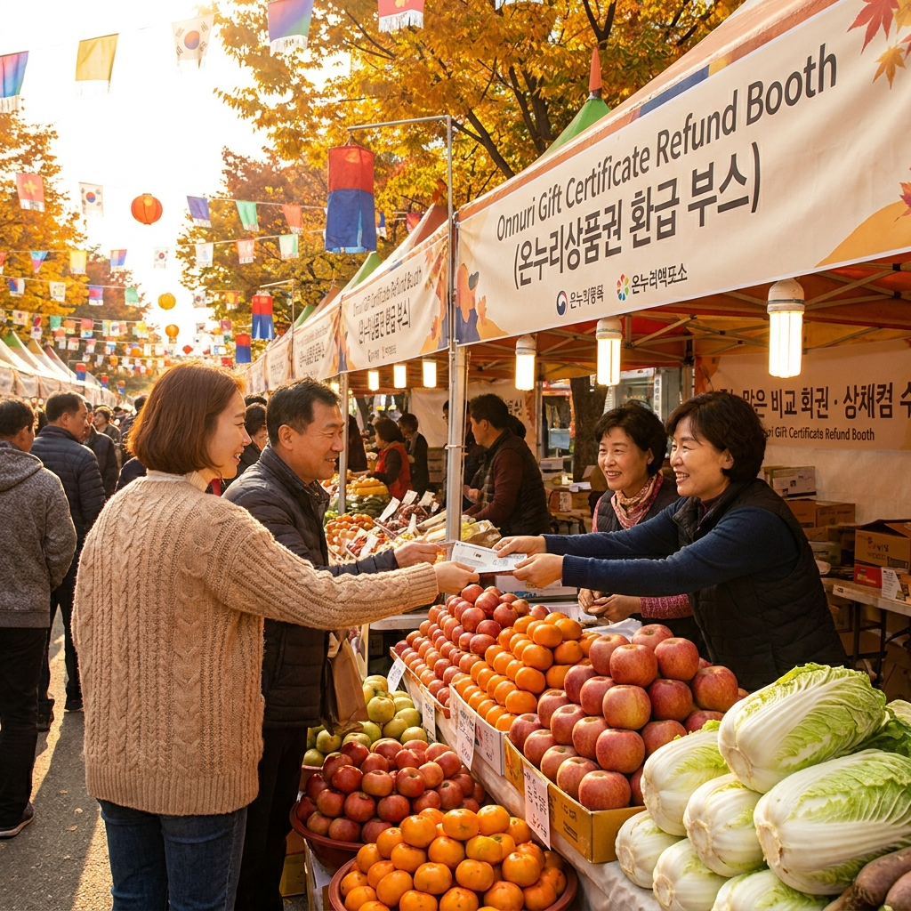

2026 코리아세일페스타 언제부터 시작하나 — 온누리상품권·가전·유통사 할인 일정과 쇼핑 전략
대한민국 최대 규모의 쇼핑 축제인 2026 코리아세일페스타(K-세일페스타)는 오는 10월 29일(목)부터 11월 15일(일)까지 총 18일간 전국 온·오프라인에서 동시 개최됩니다.
산업통상자원부와 민간 유통추진위원회가 주관하는 올해 행사는 대형마트·백화점의 생필품 반값 할인, 대형 가전제품 환급 프로모션, 그리고 전통시장 온누리상품권 최대 15% 특별 할인 및 현장 환급이 결합된 역대 최대 규모로 진행됩니다.
개막 D-21 시점인 지금부터 카테고리별 주요 세일 오픈 일정표를 미리 확인하고, 정부 농축수산물 할인 쿠폰과 카드사 무이자 혜택을 사전에 체크해 두어야 실질적인 가계 통신비와 생활비를 대폭 절감할 수 있습니다.
대형 쇼핑몰과 백화점에 걸린 대규모 가을 세일 페스타 현수막과 활기찬 쇼핑객들 / AI 제작 이미지
01 | 2026 코리아세일페스타(K-세일페스타) 공식 개최 일정과 행사 규모
국내 최대 쇼핑 축제인 '코리아세일페스타'가 2026년 가을, 한층 더 업그레이드된 혜택으로 찾아옵니다.
올해 행사는 공식 명칭을 'K-세일페스타'로 새롭게 정비하고, 2026년 10월 29일(목) 0시 개막하여 11월 15일(일) 자정까지 총 18일간 진행됩니다.
매년 11월 초에 진행되던 예년 일정보다 개막 시점이 며칠 앞당겨졌으며, 이는 11월 중순 미국의 블랙프라이데이와 중국의 광군제 등 해외 직구 시즌 전에 국내 소비를 활성화하고 고물가 속 장바구니 부담을 덜기 위한 전략적 조치입니다.
전국 대형마트, 백화점, 편의점, 면세점, 전통시장, 그리고 2,500개 이상의 유통·제조·서비스 기업이 참여하여 생필품부터 대형 가전, 자동차까지 전 품목에 걸친 대대적인 할인 공세를 펼칩니다.
02 | 산업통상자원부 주관 행사 목적과 올해 달라지는 주요 지원 정책
산업통상자원부와 중소벤처기업부가 주도하는 올해 코리아세일페스타의 핵심 목표는 '민생 장바구니 물가 안정'과 '소상공인·골목상권 상생'입니다.
단순히 대기업 유통사들의 재고 소진 행사에 그치지 않도록 정부 재정이 직접 투입되어 다양한 공공 할인 정책이 연계됩니다.
첫째, 농축수산물 상생 할인 쿠폰 정부 예산이 증액되어 제철 과일, 채소, 한우, 돼지고기, 수산물 구매 시 1인당 최대 2만~3만 원 한도 내에서 20~30% 할인이 즉시 지원됩니다.
둘째, 지역 소상공인과 골목형 전통시장을 위해 온누리상품권 특별 판매 및 환급 행사가 대대적으로 펼쳐져 소비자와 자영업자 모두에게 윈윈(Win-Win) 구조를 제공합니다.
03 | 대형마트·백화점 주요 품목별 세일 일정과 사전 쿠폰북
대형마트와 백화점은 행사 시작 1주일 전부터 사전 예약 및 티저 이벤트를 시작합니다.
| 유통 채널 |
주요 행사 품목 |
예상 할인율 및 혜택 |
집중 공략 시기 |
| 대형마트 3사 |
신선식품, 계란, 쌀, 라면, 김장 재료, 가공식품 |
1+1 증정 및 최대 50% 반값 할인 |
10.29(목) ~ 11.04(수) (1차 개막전) |
| 주요 백화점 |
가을·겨울 아우터(패딩, 코트), 뷰티 화장품, 럭셔리 패션 |
브랜드별 10~30% 할인 + 상품권 10% 증정 |
11.01(일) ~ 11.08(일) (패션 주간) |
| 창고형 할인점 |
대용량 육류, 와인, 주방용품, 겨울 보온 가전 |
클럽 회원 전용 쿠폰팩 및 즉시 할인 |
주말 피크 타임 (금·토·일) |
| 편의점 4사 |
스낵, 음료, 가공식품, 생필품 묶음 상품 |
1+1, 2+1 행사 품목 대폭 확대 (1,500종 이상) |
행사 기간 전 기간 |
대형마트를 이용하실 분들은 행사 시작 첫 주말(10월 30일~11월 1일)에 신선식품과 축산물 파격 특가가 집중되므로 이 시기를 놓치지 않는 것이 좋습니다.
04 | 대형 가전·디지털 제품(TV·냉장고·세탁기) 환급 및 프로모션 공략법
코리아세일페스타는 고가의 대형 가전제품을 교체하기에 1년 중 가장 유리한 타이밍입니다.
삼성전자, LG전자 등 주요 가전 제조사들은 행사 기간 동안 '코세페 특별 기획 모델'을 별도로 편성하여 출고가 대비 대폭 할인된 가격으로 공급합니다.
• 에너지소비효율 1등급 환급 연계: 정부가 지원하는 고효율 가전제품 구매 지원 사업과 맞물려 대상 가구는 결제 금액의 10%를 환급받을 수 있습니다.
• 다품목 패키지 구매 혜택: 혼수나 이사를 앞두고 TV, 냉장고, 세탁기, 건조기, 공기청정기 등 2품목 이상을 패키지로 구매할 경우 품목 수에 따라 최대 수백만 원 상당의 캐시백과 포인트가 지급됩니다.
• 노후 가전 보상판매: 기존에 사용하던 구형 가전제품을 반납할 경우 추가 보상 포인트를 제공하므로 폐가전 무상수거와 추가 할인을 동시에 누릴 수 있습니다.

전통시장 온누리상품권 환급 부스와 가을 농축수산물 할인 행사장 전경 / AI 제작 이미지
05 | 전통시장·골목상권 온누리상품권 특별 할인율과 환급 행사 기준
코리아세일페스타 기간 동안 가장 체감 혜택이 큰 곳은 바로 전국 전통시장과 골목상권입니다.
중소벤처기업부는 코세페 기간에 맞춰 디지털(카드형·모바일) 온누리상품권 15% 특별 할인 판매를 한시적으로 확대 시행합니다.
평소 10% 할인율에서 15%로 상향되며, 개인 구매 한도 역시 월 최대 200만 원까지 증액됩니다.
💡 전통시장 현장 온누리상품권 당일 환급 행사 팁
• 환급 조건: 행사 참여 전통시장에서 당일 국산 농축수산물 또는 제철 먹거리를 3만 4천 원 이상 구매 시 1만 원, 6만 7천 원 이상 구매 시 최대 2만 원 온누리상품권을 현장에서 즉시 환급해 줍니다.
• 실질 할인율: 15% 할인 충전한 온누리상품권으로 결제하고, 현장에서 최대 30%를 다시 상품권으로 환급받으면 실제 장바구니 체감 할인율은 40% 이상에 달합니다.
• 준비물: 구매 영수증(카드 전표 또는 현금영수증)과 신분증을 지참하여 시장 내 환급 부스를 당일 방문해야 합니다. (당일 예산 소진 시 조기 마감)
06 | 농축수산물 상생 할인 쿠폰과 제철 먹거리 장보기 꿀팁
10월 말부터 11월 초는 김장철을 앞두고 무, 배추, 고춧가루, 젓갈류 등 주요 농수산물 수요가 급증하는 시기입니다.
농림축산식품부와 해양수산부는 '농축수산물 할인지원(농할쿠폰)' 사업을 코세페와 전면 연계합니다.
• 대형마트 및 온라인몰: 계산 시 바코드 스캔 또는 온라인 결제 단계에서 농축수산물 20% 자동 할인(1인당 주간 1만~2만 원 한도)이 적용됩니다.
• 수산물 상생 할인: 가을 제철 꽃게, 대하, 고등어, 굴 등을 대상으로 최대 30~50% 특별 할인전이 전 유통사에서 동시 진행됩니다.
김장을 준비하시는 가정이라면 10월 29일 개막 직후 마트와 전통시장의 정부 지원 품목을 교차 비교하여 배추와 양념류를 분할 구매하는 것이 가장 알뜰합니다.
07 | 주요 이커머스 온라인 플랫폼 연계 기획전 및 카드사 즉시할인
오프라인 매장 방문이 어려운 분들을 위해 주요 온라인 쇼핑몰에서도 초대형 디지털 기획전이 24시간 펼쳐집니다.
네이버쇼핑, 쿠팡, G마켓, 11번가, 옥션, SSG닷컴 등 국내 대표 이커머스 플랫폼이 총출동하여 매일 오전 10시와 오후 18시 '타임딜 반값 특가'를 진행합니다.
여기에 5대 주요 카드사(국민, 신한, 삼성, 현대, 롯데)와 연계된 5~10% 결제일 즉시할인 및 최대 12~24개월 무이자 할부 혜택이 중복 제공되므로, 고가 가전이나 여행 숙박 상품을 결제할 때는 결제 전 카드사 프로모션을 필히 점검해야 합니다.
08 | 충동구매 막고 실속 챙기는 2026 코리아세일페스타 쇼핑 전략 5단계
대대적인 할인 열풍에 휩쓸려 불필요한 물건을 과소비하는 우를 범하지 않으려면 단계별 쇼핑 전략이 필수적입니다.
🎯 실패 없는 코세페 5단계 알뜰 공략법
1단계. 사전 위시리스트 작성: 평소 필요했던 가전 모델명, 생필품 수량을 미리 메모하고 현재 인터넷 최저가를 기록해 둡니다.
2단계. 온누리상품권 사전 충전: 15% 특별 할인 판매 개시일에 맞춰 디지털 온누리상품권 한도를 미리 충전해 둡니다.
3단계. 사전 쿠폰팩 선착순 다운로드: 행사 개막 2~3일 전 각 유통사 앱에서 얼리버드 중복 할인 쿠폰을 모두 수령합니다.
4단계. 1차 신선식품 vs 2차 공산품 분할 구매: 개막 첫 주(10월 말)에는 식료품을, 둘째 주(11월 초)에는 패션·가전을 공략합니다.
5단계. 영수증 취합 후 환급 신청: 전통시장 환급 부스, 고효율 가전 환급 사이트(한전)에 즉시 서류를 등록합니다.
09 | 코리아세일페스타 참여 시 주의사항과 소비자 피해 예방 FAQ
세일 기간 중 흔히 발생하는 가짜 할인과 교환·환불 분쟁을 예방하기 위한 체크포인트입니다.
⚠️ 쇼핑 전 주의사항
• 가격 부풀리기 후 할인 주의: 일부 비양심 업체가 행사 직전 정상가를 올려놓고 50% 할인하는 것처럼 눈속임할 수 있습니다. 품번(모델명)을 가격비교 포털에 검색하여 지난달 시세와 대조해 보세요.
• 특가 상품 환불 불가 고지 확인: '초특가 재고 세일'을 이유로 단순 변심 환불을 일방적으로 거부하는 사례가 있습니다. 전자상거래법상 7일 이내 청약철회 권리가 보장되는지 약관을 확인하세요.
• 품절 후 일방적 주문 취소 대비: 한정 수량 미끼 상품의 경우 결제 후 강제 취소될 수 있으므로 결제 완료 후 배송 진행 상태를 신속히 점검하시기 바랍니다.
❓ 자주 묻는 질문 FAQ
Q1. 코리아세일페스타는 일반 소비자 누구나 참여할 수 있나요?
A1. 네, 별도의 회원가입이나 신청 절차 없이 전국 대형마트, 백화점, 전통시장 및 온라인몰 방문 시 자동으로 행사 가격이 적용됩니다.
Q2. 온누리상품권 환급 행사는 주말에도 운영되나요?
A2. 네, 행사 참여 전통시장의 환급 부스는 주말에도 오전 9시부터 오후 18시까지 운영됩니다. 다만 당일 배정된 정부 환급 예산이 소진되면 조기 종료될 수 있으므로 오전에 영수증을 교환하시는 것을 추천합니다.
Q3. 자동차(현대·기아·르노 등)도 할인 혜택이 있나요?
A3. 네, 주요 완성차 제조사들도 코세페 기간에 맞춰 인기 차종에 대한 수백만 원 상당의 특별 할인 및 저금리 할부 혜택을 제공합니다. 공식 대리점 공지를 확인하시기 바랍니다.
#코리아세일페스타
#K세일페스타
#코세페2026
#온누리상품권할인
#대형마트할인
#전통시장환급행사
#가전제품환급
#농축수산물할인쿠폰
#블랙프라이데이
#알뜰쇼핑전략